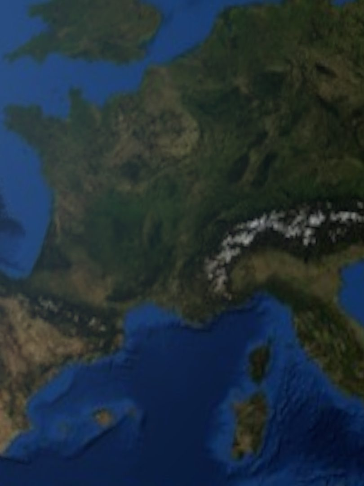

Undergraduate thesis · Tata Institute of Social Sciences · 1990–2023
Development.At whatplanetary cost?
Planetary Boundary Transgressions and Divergent Socio-Economic Pathways. A world-level study of environmental pressure and human development across 182 countries.
01 · The question
Do better lives cost the planet more?
Countries have grown richer, healthier and more urban since 1990. This study asks whether that progress has come with more pressure on the planet, and whether countries follow shared pathways of development and pressure over three decades.
It combines six environmental-pressure indicators into one Planetary Pressure Index (PPI), groups countries into development–pressure profiles, and follows them across 1990–2000, 2001–2010 and 2011–2023.
02 · Six pressures, seen from orbit
Forests, fields, air and energy
The index combines renewable energy share and forest cover (both reversed: less means more pressure), agricultural land, fertiliser use, fine-particle air pollution and energy use per person. Each is standardised, averaged when at least four are available, and rescaled to 0–100 across all periods. Values below are 2011–2023 averages from the thesis dataset.




03 · What the study finds
Better lives. Persistent pressure.
The line marks each period's mean. The spread is wide and the centre barely moves.
Circles are sized by population and coloured by profile in that period.
04 · Pressure fingerprints
Every country presses differently
Each petal is one indicator, scaled to the country's percentile among all countries in 2011–2023: a longer petal means more pressure than most. Compare any two countries.
India
05 · The pattern
Development improves. Pressure does not disappear.
More developed profiles have longer lives, higher incomes and more urbanisation, alongside higher pressure. A weaker link is not evidence that development has become independent of it.
06 · Pathways
Four profiles, three decades
Bands show countries grouped in consecutive periods. Hover a band for its count. Moves record changes in model-assigned profile, not verified gains or losses in sustainability.
Bivariate OLS of each outcome on the PPI. Filled points are significant at 5%.
The associations weaken
Income, life expectancy and urbanisation are positively associated with pressure in every period, and infant mortality negatively. Female labour-force participation is negatively associated; unemployment shows no significant association in any period.
Two groups separate more cleanly (higher score), but four keep useful development tiers. The thesis uses K = 4 and treats the profiles as a typology.
07 · The map
Profiles and pressure, period by period
08 · Method and limits
How it was done, and what it cannot say
Standardise and combine
Z-scores put six indicators on one scale; their average forms the PPI when at least four are available, rescaled to 0–100 for every period.
Group comparable profiles
One k-means model on all country-periods using PPI, log GDP per person, life expectancy, infant mortality and urbanisation, with K = 4.
Track transitions
The same model assigns profiles in each period, so moves can be counted for countries grouped in both periods.
Examine associations
Separate bivariate least-squares regressions of each outcome on the PPI, period by period.
Associations, not causes
The analysis identifies cross-country patterns. It does not show that pressure causes better living conditions, or that reducing pressure lowers development.
A proxy, not a boundary
The PPI is relative to this sample, not a direct measurement of the nine planetary boundaries. A flat mean does not mean total global pressure is unchanged.
Profiles are a typology
Assignments depend on the features, scaling and K; a silhouette of 0.25 means the groups overlap.
Many tests
Eighteen regressions are reported without multiple-comparison adjustment; significance alone does not show practical importance.
Sources: World Bank World Development Indicators, FAOSTAT, WHO Global Health Observatory, ILOSTAT and UNDP Human Development Reports. The original thesis analysis is preserved on the v1.0-thesis branch; version 2.0 corrections are documented in the repository.
09 · Original figures
The evidence, in full view
Open data. Open code.
The dataset, analysis code, tests and results tables are public, with every change from the original thesis documented.